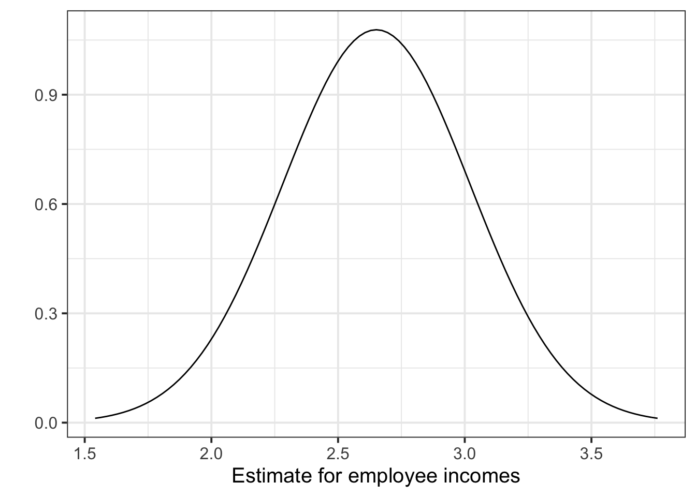

LEARNING OBJECTIVES
Suppose a group of researchers was studying income differences among local government employees in Riverview, a hypothetical medium-size Midwestern city in the US. Exploratory interviews suggest a relationship between income and education. Specifically, those employees with more formal training appear to receive better pay. In an attempt to verify whether this is so, they gathered relevant data. The researchers did not have the time or money to interview the entire population: all 320 employees on the city payroll. Therefore, they decided to interview a simple random sample of 32, selected from the personnel list that the city clerk kindly provided.
— Lewis-Beck and Lewis-Beck (2015)
In this lab we will use the riverview.csv data to examine whether education level is related to income. Please take a look at the data codebook for a preview of the data and a link to download the file.
Load the required libraries and import the riverview data into R.
Assign the data to a variable called riverview.
Investigate the marginal distribution of employee incomes.
Examine the marginal distribution of the education level variable.
After examining the marginal distributions of the variables of interest in the analysis, we typically move on to examining relationships between the variables.
Create a scatterplot to investigate the relationship between income and education level.
Using the scatterplot from the previous question, describe the relationship between income and level of education among the employees in the sample.
Looking back at the data exploration, specify a model for the relationship between income and education level in the population.
Pick a model from one of the following:
where \(\epsilon \sim N(0, \sigma) \text{ independently}\).
Fit the line to the data using the lm() function and assign the output to an object called mdl.
The syntax is:
lm(<response variable> ~ 1 + <explanatory variable>, data = <dataframe>)Finally, write down the equation of the fitted line.
Explore the following equivalent ways to obtain the estimated regression coefficients (i.e., the intercept and slope) from the fitted model mdl:
mdl, mdl$coefficients, coef(mdl), coefficients(mdl), summary(mdl)
Explore the following equivalent ways to obtain the estimated standard deviation of the errors \(\hat \sigma\) from the fitted model mdl:
sigma(mdl), summary(mdl)
Plot the data and the fitted regression line.
A predicted value is the estimate made from the model
The model-predicted values represent the estimated average response, and are obtained using the fitted line. R provides different functions according to what your goal is.
predict(<FITTED MODEL>)fitted(<FITTED MODEL>)fitted.values(<FITTED MODEL>)mdl$fitted.values# Fitted values
predict(mdl)## 1 2 3 4 5 6 7 8
## 32.53175 32.53175 37.83435 37.83435 37.83435 43.13694 43.13694 43.13694
## 9 10 11 12 13 14 15 16
## 43.13694 48.43953 48.43953 48.43953 51.09083 53.74212 53.74212 53.74212
## 17 18 19 20 21 22 23 24
## 53.74212 53.74212 56.39342 59.04472 59.04472 61.69601 61.69601 64.34731
## 25 26 27 28 29 30 31 32
## 64.34731 64.34731 64.34731 66.99861 66.99861 69.64990 69.64990 74.95250<NEW DATA>:predict(<FITTED MODEL>, newdata = <NEW DATA>)# Predictions for values not in the sample
education_query <- tibble(education = c(0, 20.5))
predict(mdl, newdata = education_query)## 1 2
## 11.32138 65.67296The residuals represent the deviations between the actual responses and the predicted responses and can be obtained either as
mdl$residuals;resid(mdl);residuals(mdl);Use predict(mdl) to compute the fitted values and residuals. Mutate the riverview dataframe to include the fitted values and residuals as extra columns.
Assign to the following symbols the corresponding numerical values:
Plot the original income vs education data points as black dots, along with the regression line in blue, the residuals as vertical red lines, and fitted values as blue dots.
Consider again the output of the summary() function, which takes as input the fitted regression object:
summary(mdl)##
## Call:
## lm(formula = income ~ 1 + education, data = riverview)
##
## Residuals:
## Min 1Q Median 3Q Max
## -15.809 -5.783 2.088 5.127 18.379
##
## Coefficients:
## Estimate Std. Error t value Pr(>|t|)
## (Intercept) 11.3214 6.1232 1.849 0.0743 .
## education 2.6513 0.3696 7.173 5.56e-08 ***
## ---
## Signif. codes: 0 '***' 0.001 '**' 0.01 '*' 0.05 '.' 0.1 ' ' 1
##
## Residual standard error: 8.978 on 30 degrees of freedom
## Multiple R-squared: 0.6317, Adjusted R-squared: 0.6194
## F-statistic: 51.45 on 1 and 30 DF, p-value: 5.562e-08We already saw that the “Estimate” column returns the estimated regression coefficients.
To quantify the amount of uncertainty in each estimated coefficient that is due to sampling variability, we use the standard error (SE) of the coefficient. Recall that a standard error gives a numerical answer to the question of how variable a statistic will be because of random sampling.
The standard errors are found in the column “Std. Error”. That is, the SE of the intercept is 6.1232, and the SE of the slope corresponding to the education variable is 0.3696.
In this example the slope, 2.651, has a standard error of 0.37. One way to envision this is as a distribution. Our best guess (mean) for the slope parameter is 2.651. The standard deviation of this distribution is 0.37, which indicates the precision (uncertainty) of our estimate.

Figure 4: Sampling distribution of the slope coefficient. The distribution is approximately bell-shaped with a mean of 2.651 and a standard error of 0.37.
It shouldn’t surprise you that the reference distribution in this case is a t-distribution with \(n-2\) degrees of freedom, where \(n\) is the sample size. Recall the main formulas for obtaining a confidence interval and a test-statistic:
Confidence interval: A confidence interval for the population slope is \[ \hat \beta_1 \pm t^* \cdot SE \] where \(t^*\) denotes the critical value chosen from t-distribution with \(n-2\) degrees of freedom for a desired \(\alpha\) level of confidence.
Test statistic: A test statistic for \(H_0: \beta_1 = 0\) is \[ t = \frac{\hat \beta_1 - 0}{SE} \] which follows a t-distribution with \(n-2\) degrees of freedom.
In the riverview example, for 95% confidence we have \(t^* = 2.04\). The confidence interval is:
n <- nrow(riverview)
tstar <- qt(0.975, df = n - 2)
tstar## [1] 2.042272beta1_ci <- tibble(
lower = 2.6513 - tstar * 0.3696,
upper = 2.6513 + tstar * 0.3696,
)
beta1_ci## # A tibble: 1 x 2
## lower upper
## <dbl> <dbl>
## 1 1.90 3.41In R it is easy to obtain the confidence intervals for the regression coefficients using the command confint():
confint(mdl, level = 0.95)## 2.5 % 97.5 %
## (Intercept) -1.183935 23.826693
## education 1.896425 3.406168The result is exactly the same (up to rounding errors) as the previous one.
We typically report our uncertainty in a statistic by providing \(\text{estimate} \pm t^* \cdot \text{SE}\). Here we would say that because of sampling variation, we are 95% confident that the slope is between 1.896 and 3.406. Interpreting this, we might say,
For all Riverview city employees, each one-year difference in formal education is associated with a difference in income between $1,896 and $3,406, on average.
Similarly, we could express the uncertainty in the intercept \(\hat \beta_0\) as:
The average income for all Riverview city employees with zero years of education is between $-1184 and $23,827.
Test the hypothesis that the population slope is zero. That is, that there is no linear association between income and education level in the population.
The term ANOVA is an acronym for ANalysis Of VAriance. In a nutshell it means that we are examining/partitioning the total variability of a response variable.
To assess how well the model is capturing the variability of the response, we can split the total variability in the response \(y\) as the sum of the variability explained by the model (the fitted regression line) plus the variability that is left unexplained in the residuals.
\[ \text{total variability in response = variability explained by model + unexplained variability in residuals} \]
Each of these part is measured by a sum of squares:
\[ \begin{aligned} SS_{Total} &= SS_{Model} + SS_{Residual} \\ \sum_i (y_i - \bar y)^2 &= \sum_i (\hat y_i - \bar y)^2 + \sum_i (y_i - \hat y_i)^2 \end{aligned} \]
What is the proportion of the total variability in incomes explained by the linear relationship with education level?
Hint: The question asks what is the value of \(R^2 = SS_{Model} / SS_{Total}\) for this model?
Recall that the \(R^2\) is computed on the available sample, hence it is a sample statistic and it will vary from sample to sample. How do we check if the model explains a significant amount of the variability of the responses in the population, or if the explained variability is due to chance alone? To assess if the sample results could have happened by random chance alone we resort to a formal F-test. In simple linear regression the hypotheses being tested are:
\(H_0: \text{the model is ineffective, } \beta_1 = 0\)
\(H_1: \text{the model is effective, } \beta_1 \neq 0\)
The relevant test-statistic compares the amount of variation in the response explained by the model to the amount of variation which left unexplained in the residuals.
The model utility test uses the F-statistic:
\[ \begin{split} F = \frac{SS_{Model} / 1}{SS_{Residual} / (n-2)} = \frac{MS_{Model}}{MS_{Residual}} \end{split} \]
The sample F-statistic is compared to an F-distribution with \(df_{Model} = 1\) and \(df_{Residual} = n - 2\) degrees of freedom.1
Look at the output of summary(mdl) and anova(mdl).
For each output, identify the relevant information to conduct an F-test against the null hypothesis that the model is ineffective at predicting income using education level.
Please note that in simple linear regression, the F-statistic for overall model significance is equal to the square of the t-statistic for \(H_0: \beta_1 = 0\).
Let’s check that. Consider the F value output of anova(mdl) and the t value for education returned by summary(mdl)
F value = 51.452
t value = 7.173You can check that the squared t-statistic is equal, up to rounding error, to the F-statistic: \[ t^2 = F \\ 7.173^2 = 51.452 \]
Lewis-Beck, Colin, and Michael Lewis-Beck. 2015. Applied Regression: An Introduction. Vol. 22. Sage publications.
\(SS_{Residual}\) has \(n - 2\) degrees of freedom. There are \(n\) residuals, but two degrees of freedom are lost in estimating the slope and intercept of the line used to obtain the \(\hat y_i\)s. \(SS_{Model}\) has 1 degrees of freedom. Even though there are \(n\) deviations \(\hat y_i - \bar y\), they are all computed from the same fitted model, which has two degrees of freedoms associated to it: the intercept and the slope. One degree of freedom is lost as the deviations \(\hat y_i - \bar y\) are subject to a constraint: they must sum to zero.↩︎